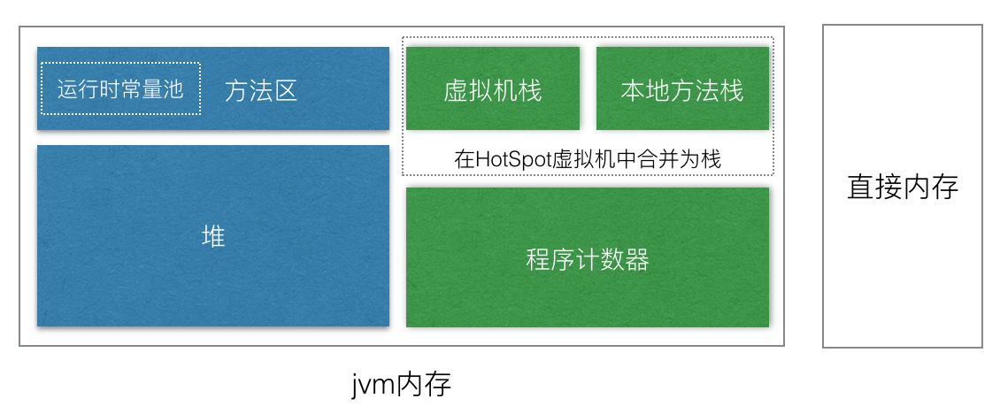

最近花了一周时间把《深入Java虚拟机》这本书看完了，虽然说看之前，对jvm已经基本了解了。但是看书的过程中依然会有很多恍然大悟的时刻。很多平时使用过的功能特性，在看书的过程中才知道原来背后的原理是这样的。因此，平时通过Google我们很大程度上只是“知其然”，而要做到“知其所以然”确实还需要从最基础开始学习。
温故而知新，这里对看书过程中的一些心得做一个总结。
全书内容，分为五大部分，第一部分简单的介绍了Java已经JVM的历史，并展示了如何自己编译JDK。想要学习jvm，通过自己编译jvm和读jvm的源码，确实是最直接的办法，当然这个学习过程会比较困难和耗时。所以我只是编译了jdk，并没有去读源码。
内存组成
第二部分是jvm的内存管理机制，主要包括了jvm的内存组成，内存管理（HotSpot虚拟机）。这一部分内容是java程序员面试中最经常遇到的问题，也是考验一个java程序员基本功的重要指标。首先是内存的组成，相信大部分程序员都知道java内存分为堆和栈。但这只是一个非常粗略的描述，jvm在运行过程中涉及到的内存分为以下部分：

其中，蓝色部分为所有线程共享的内存，绿色部分为线程隔离内存。
直接内存，它并不是jvm内存的一部分，在java虚拟机规范中也没有定义该区域。但这也是经常会被使用的一块内存，它使用native函数库直接分配的堆外内存，不会受到jvm堆大小的限制，但是会收到本机总内存大小的限制。由于它不是jvm内存的一部分，所以GC当然也不会对它进行回收，因此这块内存需要由程序自行管理，当内存分配失败时会出现OutOfMemoryError。
程序计数器，用于存储当前线程执行字节码指令的地址，如果执行的是native方法则为空。每个线程都需要有一个独立的程序计数器，因此他是线程私有的内存。该区域没有定义任何OutOfMemoryError。
虚拟机栈，用于存储执行java方法时创建的栈帧，一个栈帧包括了局部变量，操作数栈，动态链接，方法出口等信息，每个方法的调用，就对应着一个栈帧在虚拟机栈中的入栈到出栈的过程。当执行方法请求的栈深度大于虚拟机允许的栈深度时，就会抛出StackOverflowError。
本地方法栈，与虚拟机栈一样，只是它用于执行native方法，在HotSpot虚拟机中，它与虚拟机栈合并为同一块内存。可以通过-Xss参数指定大小，同样也会抛出StackOverflowError。
堆，对是虚拟机中最大的一块内存，被所有线程共享，几乎所有对象实例都在这里分配内存（为什么说是几乎呢？由于在JIT的编译优化、逃逸分析等技术，会发生栈上分配、标量替换等，使得对象不再绝对的分配在堆内存中）。这块内存是GC管理的主要区域。从GC角度，它可以分为新生代和老年代，新生代又可以分为Eden空间，FromSurvivor和ToSurvivor空间，可以通过-XX:SurvivorRatio设置Eden与Survivor的比例，默认为8:1:1。从内存分配的角度，java堆中可能划分出多个线程私有的分配缓冲区（TLAB）（与物理机上CPU寄存器缓存内存数据同样的原理）。可以通过-Xmx，-Xms指定堆的最大和最小，通过-Xmn可以指定其中新生代的大小，新生代默认为堆大小的3/8。该区域会发生OutOfMemoryError。
方法区，在jdk1.6之前的HotSpot虚拟机中又称为永久代，从jdk1.7开始已经放弃。它用于存储已被jvm加载的类信息、常量、静态变量、即时编译器编译后的代码等数据。通过-XX:PermSize，-XX:MaxPermSize来指定下限和上限。这个区域在jdk8中已经被取消，其中的数据一部分被存到堆中，还一部分被存到称为Metaspace的空间中，这个区域的内存不在使用jvm内存，而是直接使用系统内存，默认可以无限扩展，直到耗尽系统内存，可以通过-XX:MaxMetaspaceSize来指定上限。会发生OutOfMemoryError。
运行时常量池，是方法区的一部分，用于存储编译期生成的各种字面量和符号引用，这部分数据将在类加载后进入方法区的运行时常量池中。由于运行时常量池的内容不一定是编译期才能产生，在运行过程中也可能将新的常理放入池中，比如String.intern()方法。会发生OutOfMemoryError。
内存管理
内存管理可以分为两块内容，内存管理和内存回收。前面我们说过Java程序在创建对象的时候会把对象分配在堆中，在使用时需要通过栈上的reference数据来找到堆上的具体对象。目前对象的访问方式有两种，句柄和指针。句柄访问方式，java堆中会划分出一块内存用来作为句柄池，栈上reference中存储的就是句柄的地址。而句柄中又包含了实例数据与类信息各自的地址信息。指针访问方式，reference中存储的直接就是对象地址，对象地址中又包含了类信息的地址。目前HotSpot虚拟机使用的第二种，指针访问的方式。
GC，java虚拟机中最重要的功能之一。想要做到内存自动回收，那就需要知道一块内存什么时候可以被回收，也就是需要判断一个对象是否还活着。通常大家都知道的一种办法是：引用计数法。它有很多著名的应用案例，如FlashPlayer、Python等等都是用引用技术算法。但是，目前主流的java虚拟机里面都没有选用引用技术算法来做内存管理，主要是因为它很难解决对象之间的相互循环引用问题。在主流的jvm中都是通过可达性分析算法来判断对象是否存活。为了更灵活的描述对一个对象的引用，jdk1.2之后把引用分为了4种程度。
强引用：也就是我们通常使用的引用方式，只要还存在强引用，垃圾收集器就永远不会回收掉被引用的对象。
软引用：用来描述有用但非必需的对象，在系统将要发生内存溢出之前，会将软引用的对象列为回收范围之中进行第二次回收。如果这次回收之后还是没有足够的内存，才会抛出内存溢出。SoftReference
弱引用：用来描述非必需的对象，弱引用的对象只能活到下一次垃圾收集之前，当垃圾收集器工作时，无论内存是否够用，弱引用都会被回收掉。WeakReference
虚引用：又称为幽灵引用，无论是否存在虚引用都会被回收，虚引用的唯一意义是当这个对象被回收时会收到一个系统通知。PhantomReference
GC算法：
标记-清除算法：最基础的收集算法，主要缺点：标记和清除的效率不高，清除后会产生大量内存碎片。
复制算法：将内存分为两块，每次只使用其中一块，当一块用完了，就将还存活的对象复制到另一块上，然后把这块空间全部清除，这样就避免了内存碎片的问题。年轻代中的Eden和Survivor就是使用该算法。这里有一个“分配担保”的机制，当一块Survivor没有足够的空间存放上一次gc留下的对象时，可以通过分配担保直接进入老年代。
标记-整理算法：当对象存活率较高时，复制算法会进行很多的对象复制操作，效率比较低。同时复制算法还会浪费50%的空间。所以老年代一般不能直接采用复制算法，而是采用标记整理算法，标记过程与标记清除算法一样，但标记完后不会直接回收对象，而是让所有存活着的对象都向一端移动，然后清理掉边界以外的内存。这样就解决了内存碎片的问题。
GC策略：
Serial收集器：单线程收集器，进行GC时需要Stop The World。通常用于Client模式。
ParNew收集器：相当于Serial的多线程版本。通常用作Server模式下新生代的收集器。主要是因为出了Serial只有它可以和CMS配合工作。用-XX:UseParNewGC来指定。它是CMS的默认新生代收集器。
Paralle Scavenge收集器：新生代收集器，与ParNew的不同之处在于，它关注的重点是吞吐量，也就是可以尽量降低垃圾收集占用CPU时间的比例。适合于在后台运算，而不需要太多交互任务的情况。使用-XX:+UseParallelGC来指定，使用-XX:MaxGCPauseMillis指定最大停顿时间，-XX:GCTimeRatio指定吞吐量大小。无法与CMS共同工作。
Serial Old收集器：Serial的老年代版本，主要用于client模式下的老年代，以及在server模式下，作为CMS并发失败时的后备方案使用。
Paralle Old收集器：在jdk1.6之前，Paralle Scavenge只能搭配Serial Old作为老年代收集器。从jdk1.6之后，这个吞吐量优先的收集器才能更好的发挥作用。特别是在注重吞吐量以及CPU资源敏感的场合。
CMS收集器：ConcurrentMarkSweep，并发标记清除。以获得最短的回收停顿时间为目标。标记一共分为4个步骤：
- 初始标记（initial）
- 并发标记（concurrent）
- 重新标记（remark）
- 并发标记（concurrent）
其中初始标记和重新标记两个过程仍然需要Stop The World，但这两个过程的时间非常短。并发标记的过程是可以与用户线程同时工作的。
它的缺点是会占用一部分用户的CPU资源导致应用进程变慢，吞吐量降低。它无法回收浮动垃圾，可能会出现Concurrent Mode Failure，这时就会降级到Serial Old收集器来对老年代进行回收。还有，因为CMS是采用标记清除算法，所以会产生大量的内存碎片，为此，CMS提供了-XX:+UseCMSCompactAtFullCollection（默认开启）来指定当需要进行FullGC时，对内存碎片进行整理。由于内存整理是无法并发进行的，所以会导致停顿时间变长。因此又提供了另一个参数-XX:CMSFullGCsBeforCompaction指定经过多少次不压缩的FullGC后接着进行一次带压缩的FullGC（默认0）。
G1收集器：Garbage First，是当前最新的垃圾收集技术。在使用G1收集器，内存不在按照新生代和老年代进行收集，而是将堆划分为多个大小相等的区域（Region），新生代和老年代不再是无力隔离的了。他们都是一部分Region的集合。G1会根据各个Region中垃圾堆积的价值大小维护一个列表，优先回收价值最大的Region（所以称为Garbage First）。
常用工具
jps，常用参数：-m（输出启动时传递给main class的参数）、-l（输出main class的全名）、-v（输出虚拟机启动时的jvm参数）。
jstat，用法[jstat -参数 pid millis times]，常用参数：-class(监视类装载卸载数量时间等)、-gc（gc相关统计数据）、-gcutil(百分比)、-gccapacity、-gccause、-gcnew、-gcold、-gcpermcapacity等。
jmap，用来dump堆内存到文件。常用参数：-dump（如，jmap -dump:file=xxx.dmp pid）、-heap（查看当前jvm堆信息）、-histo（堆中对象的统计信息）。
jstack：生成当前jvm的线程快照，常用参数：-F（正常输出没有响应时，强制输出线程堆栈）、-l（除堆栈外，额外显示关于锁的信息）、-m（如果调用了native方法，可以显示C/C++堆栈）。
还有可视化工具jconsole和VisualVM